现场、核实、影响，一段回答一个问题
新闻开场先给现场发生了什么，再给核实：谁确认、什么时候、还有哪些未知；最后给影响和下一步。背景只保留解释当前事件必需的部分，不要从历史课讲起。
每一段只回答一个观众问题。把“为什么会这样”和“接下来会怎样”分开，观众才不会在中段迷路。
边界
没有核实的信息，不要用确定语气。把“据称”“正在核实”写进画面或旁白，不要用剪辑把不确定变成确定。
现场
0 到 5 秒现场，5 到 15 秒核实，15 到 30 秒背景和影响；信源字幕标清。
DIAGRAM / NEWS
新闻现场：事实优先

怎么做
- 0 到 5 秒给现场。
- 5 到 15 秒给核实。
- 15 到 30 秒给背景和影响，信源字幕标清。
别踩
别用二手画面当现场；那会毁掉可信度。
图片说明：本页封面、图解与步骤图是编辑示意或结构图，不是本页实测照片，也不能当作器材测试证据；AI 辅助生成的图会在图注标出。判断器材或画面，以正文的测试条件与现场记录为准。